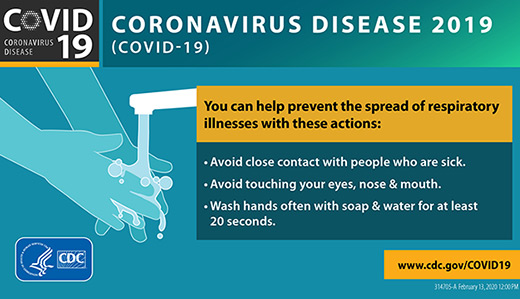

Select the Location,Book Doctors Appointment and Pay Online.
Please take the risk assesment test for COVID 19 to proceed.
If you are in high risk the login will fail,you have to follow the government guidelines.
The system will take you to login page if you are at low risk.